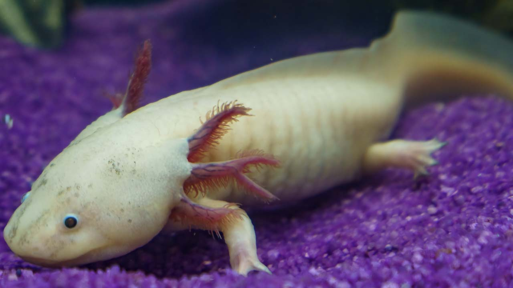

El ajolote es un anfibio originario de México que vive en el agua toda su vida. Es famoso por su capacidad de regenerar partes de su cuerpo como patas y órganos.

El ajolote nunca completa su metamorfosis como otros anfibios y permanece en estado juvenil toda su vida.